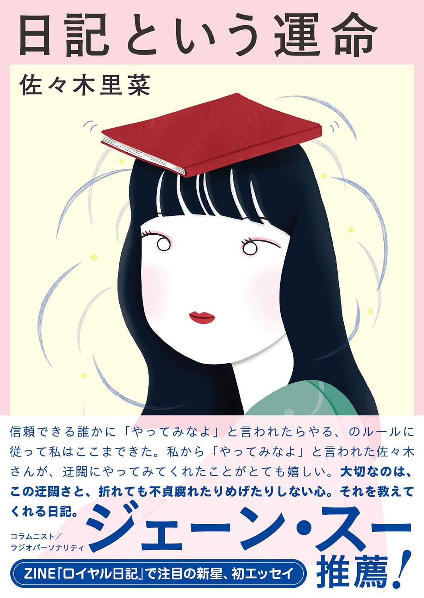

＼ジェーン・スー（コラムニスト／ラジオパーソナリティ）推薦！／
“信頼できる誰かに「やってみなよ」と言われたらやる、のルールに従って私はここまできた。
私から「やってみなよ」と言われた佐々木さんが、迂闊にやってみてくれたことがとても嬉しい。
大切なのは、この迂闊さと、折れても不貞腐れたりめげたりしない心。
それを教えてくれる日記。”
日記の書き方は世に溢れている。
「疲れた日は、短い日記を書くだけでも良いですよ」
そうは言っても、私は本当はもっと長い日記を書きたい。
「日記には、なんでも好きなことを書いてみましょう」
そうは言っても、私は自分が好きなことが何かすら分からなくて困っている。
「そうは言っても！」を抱えたすべての人へ。
大反響を呼んだZINE『ロイヤル日記』など、数々の日記本を自主制作してきた
新星・佐々木里菜による、「日記を書くこと」をめぐる26編のエッセイ。
日記をめぐる静かな思索が、日記を書く人にもそうでない人にも
瑞々しく素直な文体でひらかれる一冊！
佐々木里菜 著
発行：産業編集センター
四六変型判 縦180mm 横128mm 厚さ17mm 240ページ
定価 1,700円+税 1,870円（税込）
デザイン：佐藤豊
装画・挿絵：ナガタニサキ
ISBN：978-4-86311-513-2
2026.10.15
初めての書き下ろし単著『日記という運命』が刊行されます

サイン本取扱書店一覧（順不同）
- 未来屋書店オンラインストア （オンラインのみ）
- 本のすみか （大阪）
- Books 移動祝祭日 （東京）